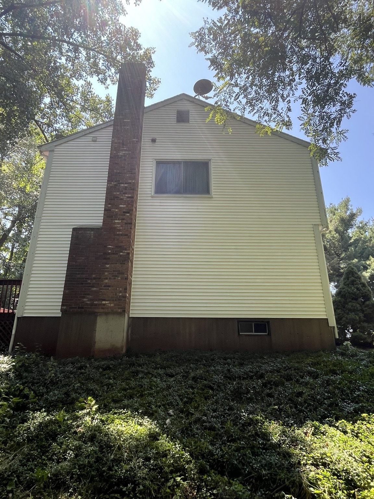
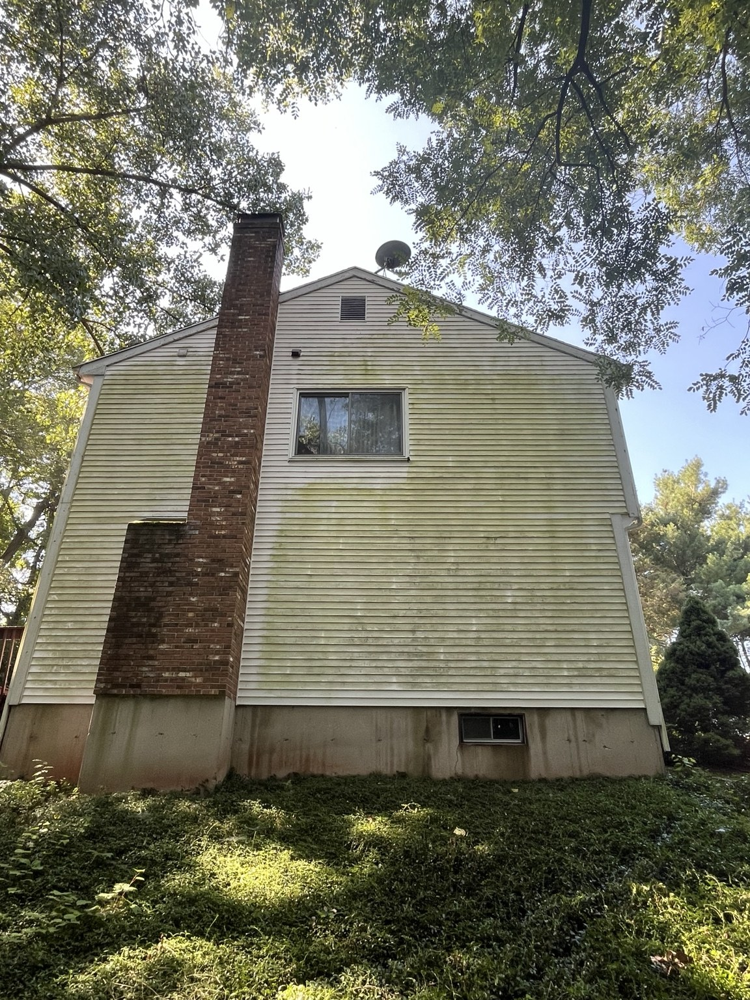

Paver Cleaning, Joint Sanding and Sealing
Paver restoration can refresh the appearance of patios, walkways and driveways while helping stabilize joints and protect compatible surfaces. Each project begins with an inspection of the pavers, drainage and existing joint material.
Property-safe cleaning with clear expectations
- Deep cleaning for paver patios, walkways and driveways
- Joint-sand replacement where appropriate
- Optional sealing based on paver condition and project goals
- Helps refresh color and improve overall presentation
Tell us about your property
What to expect
Inspect pavers, joints, drainage and existing sealer.
Clean the surface and remove loose joint material as appropriate.
Allow suitable drying time before installing joint sand.
Apply compatible sealer when selected and weather conditions allow.


See the difference professional exterior cleaning can make
Every property is different. We inspect the surface, explain realistic expectations and select a method appropriate for the project.
View More ResultsPaver Cleaning, Sanding & Sealing FAQs
Do all pavers need sealing?
No. Sealing is optional and should be selected based on paver type, condition, appearance goals and maintenance expectations.
How long does the process take?
The schedule depends on weather, drying time, project size and whether sanding and sealing are included.
Can you fix sinking or badly uneven pavers?
Cleaning and sealing do not replace structural paver repair. Significant settling or base failure may require a hardscape repair specialist.